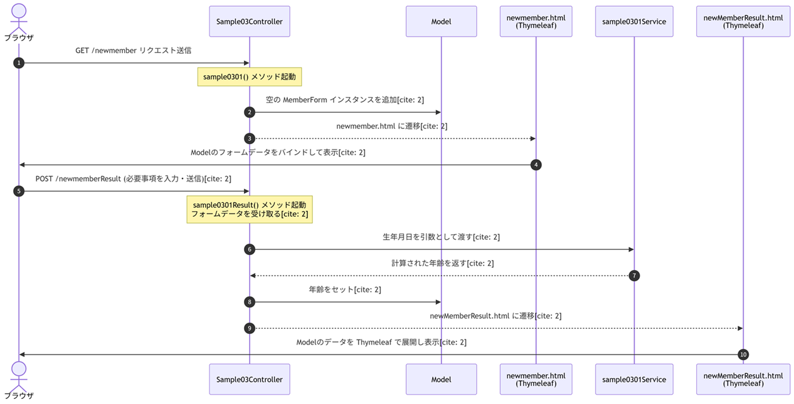

１，MVCモデルとSpring MVCの違い
誤解している方々が多いですね。
MVCのModelと、Spring MVCのModelは、全く別物です。
この誤解は、MVCと、Spring MVCを同列に見ている事から生じる誤解です。
MVCは目標で、Spring MVCは手段です。
MVCのModelと、Spring MVCのModelは、全く別物です。
この誤解は、MVCと、Spring MVCを同列に見ている事から生じる誤解です。
MVCは目標で、Spring MVCは手段です。
２，Spring MVCのServiceの役割
簡単に言えば、何でもかんでもControllerに書くのではなく、Controllerは「ユーザーからのリクエストを受け取り、Serviceに処理を依頼し、結果を返す」という役割に徹するべきです。
この、異様に膨らんだControllerを「Fat Controller（太ったコントローラー）」と呼びます。
細かい事を言えば、下記のような役割を担います。が、気にする事はありません。
このシステム固有の処理を書けば良いのですよ。
この、異様に膨らんだControllerを「Fat Controller（太ったコントローラー）」と呼びます。
細かい事を言えば、下記のような役割を担います。が、気にする事はありません。
このシステム固有の処理を書けば良いのですよ。
- ビジネスロジックのカプセル化 データの計算、業務ルールに基づくバリデーション、複数の処理を組み合わせた一連のワークフローなど、システム固有の「やりたいこと（業務）」をここに記述します。
- トランザクシ管理（@Transactional） データベースへの書き込みや更新が複数にまたがる際、「すべて成功したら確定（コミット）、途中でエラーが起きたらすべて取り消し（ロールバック）」というトランザクション制御を宣言的に行います。
- データアクの調停（Repositoryの統合） Controllerからリクエストを受け取ると、必要に応じて複数のRepository（データアクセス層）を呼び出し、データを加工してControllerへ返します。Controllerを「薄く（Thin Controller）」保つ役割があります。
- 他システムや外部APIとの連携 メール送信、外部APIの呼び出し、ファイル処理など、データベース操作以外のビジネスプロセスを統括します。
３，Sample03 シナリオ
１，ブラウザから http://localhost:8080/newmember へ GETリクエストを送信する。
２，Sample03Controller の @GetMapping("newmember") アノテーションがついたメソッド sample0301() が起動する。
３，sample0301() は、空の MemberForm インスタンスを Model に追加し、newmember.html に遷移する。
４，newmember.html は、Thymeleaf を用いて作成され、Model のフォームデータを画面にバインドする。
５，ユーザーはブラウザから必要事項を入力し、サーバーに送信する。
６，Sample03Controller の @PostMapping("/newmemberResult") アノテーションがついたメソッド sample0301Result() が起動する。
sample0301Result() は、クライアントから送られてきた値（フォームデータ）を受け取る。
Service の sample0301Service に 生年月日 を引数として渡す。
７，sample0301Service は、受け取った 生年月日 から 年齢 を計算し、sample0301Result() に返す。
８，sample0301Result() は、Model に 年齢をセットし、newMemberResult.html に遷移する。
９，newMemberResult.html は、Model に渡されたデータを Thymeleaf で展開し表示する。
１０，処理を終了する。
２，Sample03Controller の @GetMapping("newmember") アノテーションがついたメソッド sample0301() が起動する。
３，sample0301() は、空の MemberForm インスタンスを Model に追加し、newmember.html に遷移する。
４，newmember.html は、Thymeleaf を用いて作成され、Model のフォームデータを画面にバインドする。
５，ユーザーはブラウザから必要事項を入力し、サーバーに送信する。
６，Sample03Controller の @PostMapping("/newmemberResult") アノテーションがついたメソッド sample0301Result() が起動する。
sample0301Result() は、クライアントから送られてきた値（フォームデータ）を受け取る。
Service の sample0301Service に 生年月日 を引数として渡す。
７，sample0301Service は、受け取った 生年月日 から 年齢 を計算し、sample0301Result() に返す。
８，sample0301Result() は、Model に 年齢をセットし、newMemberResult.html に遷移する。
９，newMemberResult.html は、Model に渡されたデータを Thymeleaf で展開し表示する。
１０，処理を終了する。
４，Sample03 シーケンス図
